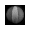
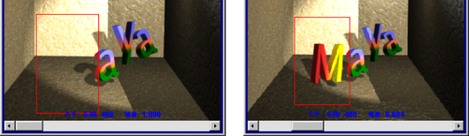
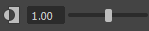

可以在状态行（工具栏）中使用渲染按钮，或使用“渲染视图”(Render View)工具栏中的按钮来执行各种操作。
有些工具专门用于渲染器，因此仅当适用于选定渲染器时才处于活动状态。
有关“渲染视图”(Render View)的详细信息，请参见关于渲染视图渲染。
- 重做上一次渲染(Redo Previous Render)
-
渲染上次渲染过的同一视图。如果上次渲染了某个区域，“重做上一次渲染”将渲染整个图像。
在此按钮上单击鼠标右键可选择摄影机。所有默认和用户定义的摄影机都可用。
- 渲染区域(Render Region)
-
仅渲染框选区域。如果已对希望执行快速测试渲染的部分曲面做出更改，这将非常有用。详细信息请参见渲染场景中的区域。
- 快照(Snapshot)
-
在此按钮上单击鼠标右键可选择摄影机。将对选定视图拍摄线框快照，并作为背景加载到“渲染视图”(Render View)中。快照中使用的渲染器就是当前工作区（“Viewport 2.0”或“旧版默认视口”(Legacy Default Viewport)）中使用的渲染器。
然后，可以框选一个区域在快照背景的前方进行渲染，并单击“渲染区域”(Render region)图标。
在此按钮上单击鼠标右键可选择摄影机。所有默认和用户定义的摄影机都可用。
注： 该选项在 IPR 渲染期间不起作用。 - 重做上一次 IPR 渲染(Redo Previous IPR Render)
-
IPR 渲染上次 IPR 渲染过的同一视图。
在此按钮上单击鼠标右键可选择摄影机。所有默认和用户定义的摄影机都可用。
- 刷新 IPR 图像(Refresh the IPR Image)
-
基于做出的所有更改完整更新整个图像。刷新时，每次仅出现一小块图像，加载整个图像的所有采样可能会用去大量内存。
- 打开渲染设置窗口(Open Render Settings Window)
-
打开渲染设置窗口。
- 显示 RGB 通道(Display RGB Channels)
-
显示带 RGB 通道的图像。这是默认的显示模式。
在此按钮上单击鼠标右键可选择单个通道。每个通道都有一个对应的图标：
通道 图标 RGB 通道
红色
绿色
蓝色

亮度
 - 显示 Alpha 通道(Display Alpha Channel)
-
仅显示图像的 Alpha 通道。有关如何使用 Alpha 通道的一些示例，请参见“使用背景和蒙版不透明度”。
- 显示实际大小(Display Real Size)
-
以精确像素分辨率显示图像。另请参见测试渲染低分辨率静止图像或帧。
- 保持图像(Keep Image)
-
保持当前图像以便随后查看。如果保持了多个图像，将在窗口底部显示滑块。拖动此滑块可查看之前“保持”的图像。
也可以使用添加的任何注释来保持渲染图像。在“保持图像”(Keep Image)按钮上单击鼠标右键，并选择“保持图像”(Keep Image)和“注释”(Comment)选项。当显示“自定义注释”(Custom Comment)对话框后，在字段中输入文本，然后单击“确定”。自定义注释将显示在图像底部。
注：结束会话时，存储（“保持”）的图像将丢失。
移除当前图像/移除所有图像(Remove Current Image / Remove All Images)
在图标上单击鼠标右键以选择“移除当前图像”(Remove Current Image)或“移除所有图像”(Remove All Images)选项。
也可以使用“渲染视图”(Render View)窗口中的“文件”>“从渲染视图中移除图像”(File > Remove Image from Render View)和 “文件”>“从渲染视图中移除所有图像”(File > Remove All Images from Render View)选择这些选项。详细信息请参见渲染视图菜单栏。
- 移除当前图像(Remove Current Image)
-
从“渲染视图”(Render View)释放当前图像（及其使用的内存）。使用窗口底部的滑块选择要移除的图像。
- 移除所有图像(Remove All Images)
-
从“渲染视图”(Render View)释放所有图像（和这些图像使用的内存），以便只保留最近渲染的图像。
如果正在“渲染视图”(Render View)窗口中查看某个保存的图像，该选项仍会移除所有保存的图像，包括当前显示的图像。仅保留最近渲染的图像。
提示：只能移除“保持”的图像。如果正在“渲染视图”(Render View)窗口中查看还未保持的最新渲染图像，选择该选项将显示错误消息，提示无法移除当前图像。
- 渲染器(Renderer)
-
从下拉列表中选择渲染器。
- 曝光(Exposure)
-
调整显示亮度。通过减小曝光，可查看默认在高光下看不见的细节。
您可以通过以下传统方式来设置值：使用滑块；在数字框中键入内容；或在数字框中单击，然后按住 Ctrl 键并使用鼠标中键拖动。此外，您可以：- 单击图标在默认值和修改值之间切换。
- 按 Ctrl 和减号键以按微调增量减少。
- 按 Ctrl+Alt 和减号键以按粗调增量减少。
- 按 Ctrl+= 以按微调增量增加。
- 按 Ctrl+Alt+= 以按粗调增量增加。
这是诊断选项，不保存在场景中。尽管您可以通过“文件 > 保存图像”(File > Save Image) >
 从“渲染视图”(Render View)保存已管理颜色的图像，该诊断选项也不应用于渲染的输出。
从“渲染视图”(Render View)保存已管理颜色的图像，该诊断选项也不应用于渲染的输出。
- Gamma
-

调整要显示的图像的对比度和中间调亮度。增加 Gamma 值，可查看图像阴影部分的细节。
您可以通过以下传统方式来设置值：使用滑块；在数字框中键入内容；或在数字框中单击，然后按住 Ctrl 键并使用鼠标中键拖动。此外，您可以：- 单击图标在默认值和修改值之间切换。
- 按 Ctrl+; 以按微调增量减少。
- 按 Ctrl+Alt+; 以按粗调增量减少。
- 按 Ctrl+' 以按微调增量增加。
- 按 Ctrl+Alt+' 以按粗调增量增加。
这是诊断选项，不保存在场景中。特别是，您不需要将其设置为 2.2 以模拟 sRGB。尽管您可以通过“文件 > 保存图像”(File > Save Image) >
从“渲染视图”(Render View)保存已管理颜色的图像，该诊断选项也不应用于渲染的输出。
- 视图变换(View Transform)
-
控制从用于显示的工作颜色空间转化颜色的视图变换。此选项非常有用，例如，如果要快速检查原始颜色值，可以使用此选项。可以选择的可用颜色空间取决于您是否使用 OCIO 配置文件进行颜色管理。
- 单击该图标可暂时将视图变换切换到禁用状态，然后再切换到启用状态。
- 使用该下拉列表可选择其他视图变换。
除非已启用颜色管理，否则它们将不可用。请参见颜色管理。
这些是诊断选项，不保存在场景中。尽管您可以通过“文件 > 保存图像”(File > Save Image) >
从“渲染视图”(Render View)保存已管理颜色的图像，这些诊断选项也不应用于渲染的输出。
- 暂停 IPR 调整(Pause IPR Tuning)
-
暂停更新“渲染视图”(Render View)中的选定 IPR 区域。
- 关闭 IPR 文件并停止调整(Close IPR File and Stop Tuning)
-
关闭当前 IPR 文件并停止当前 IPR 会话。